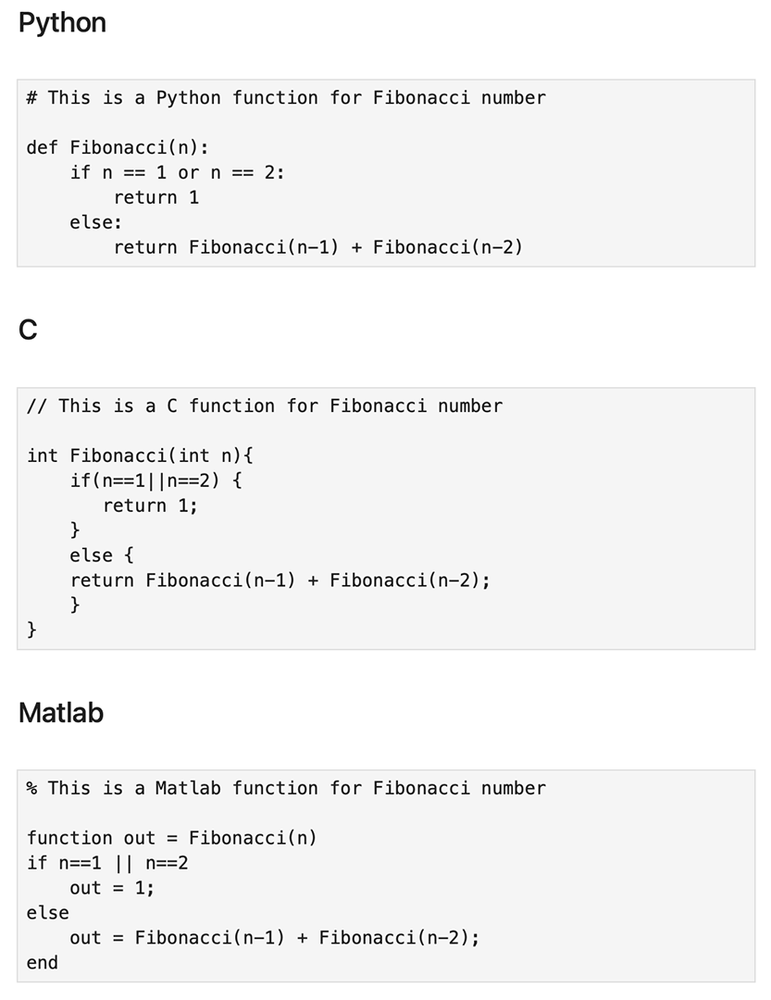
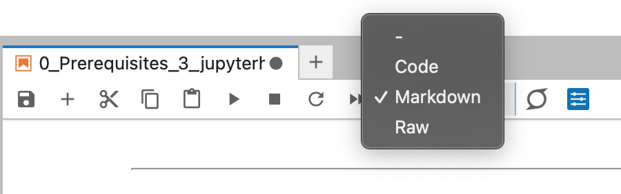
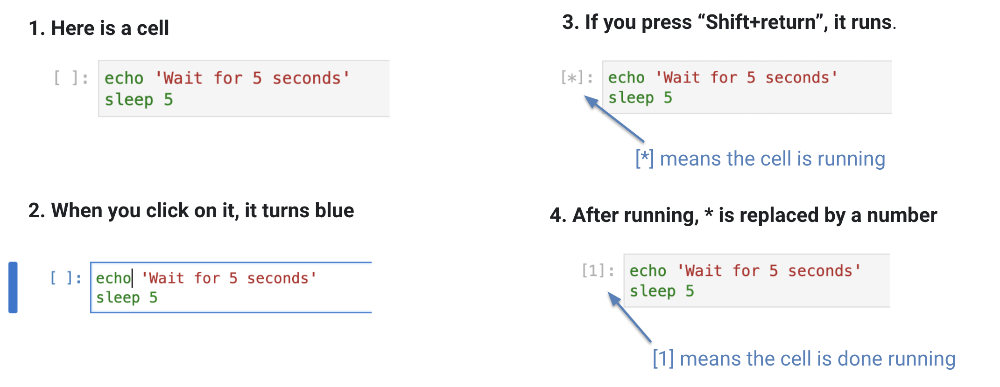

Python & Jupyter Basics#
Why Python?#
Python is open source.
Python is a high-productivity language: do more with less code.
Python is interpreted and portable, like Matlab, so no need to compile your code for it to run.
Python is highly human readable and popular. Currently there are 500,000+ Python packages on the Python Package Index (PyPI).
Pangeo is the recommended Python software stack:#
Xarray: Read and write NetCDF files
Jupyter: A browser-based, “terminal”-like interface with nice graphics capabilities
Additional packages provide useful capabilities, such as:
numpy: For general Python N-dimensional arrays
matplotlib: For general plotting capabilities
cartopy: For plotting data on map projections
pandas is useful to import/export files in common formats (e.g., csv, xlsx) and organize and manipulate the data in a handy object
scipy: For scientific python functions and features based on NumPy arrays
hvplot: A high-level plotting API for the PyData ecosystem built on HoloViews.
xesmf: Xarray-based regridding package
scikit-learn: For data mining and data analysis
“How to install external python libs on my laptop / desktop?”#
To best way to get the scientific Python environment is using the Conda package management system. Please follow the official installation guide for installing on
Hello world#
print("Hello world!")
Hello world!
Comparison between Python, C, and Matlab#
Python uses 0 based ordering
Python uses
#sign for commentingPython determines block size based on indentation, i.e., no
endor}to close a block

Figure: Python vs C vs Matlab
Jupyter#
Jupyter is a webserver, for interactive computing across all programming languages.
When you run it on your laptop (Jupyter Notebook or JupyterLab), you can directly interact with the webserver from your browser.
When you are remote, you just communicate HTML (and serialized data) back and forth from your browser to the webserver.
Reproducibility & Extensibility#
It is fast and efficient.
Jupyter allows you to save your work in a notebook (ipynb), so you can share your work with other people simply by sharing your notebook file. Other people can use it and extend it for their own purposes.
A Jupyter Notebook is composed of cells. A Cell could have three types#
Codecell contains Python codeMarkdowncell has Markup language and can be used for notes/commentsRawcell has simple text

Figure: Cell types
How to run a cell?#
To run a cell in a notebook. Click on the cell and press: Shift+return

Figure: Running a cell
How to run a shell command within a cell?#
# list the content of within the current directory
!ls
0_Prerequisites_1_unix.ipynb _build
0_Prerequisites_2_python_jupyter.ipynb _config.yml
0_Prerequisites_3_ncar_account_jupyterhub.ipynb images
1_run_CESM_in_4steps_intro.ipynb intro.md
2_run_CESM_in_4steps_exercises.ipynb requirements.txt
3_analyze_CESM_output.ipynb _toc.yml
4_additional_info_examples.ipynb